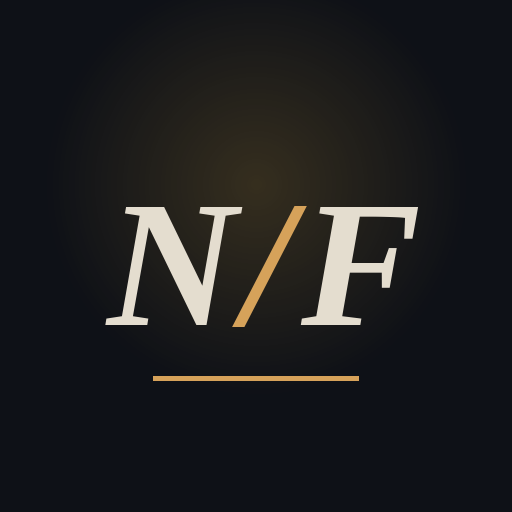

Night · File
CASE FILES · AFTER DARK
Dark true stories from Wikipedia, one a night, for reading before bed.
Free · No account · Adds to your app drawer and home screen
Installed
Night File is in your app drawer. Open it from there any time.
- Open this page in Safari (it won't work from inside another app).
- Tap the Share button at the bottom of the screen.
- Scroll down and tap Add to Home Screen.
- Tap Add. Night File appears on your home screen.
- Open this link in Chrome or Samsung Internet (tap ⋮ and choose Open in browser).
- Tap the browser menu ⋮ or ≡.
- Choose Install app or Add page to → Home screen.